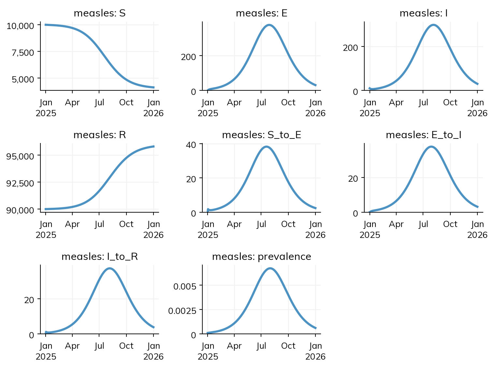
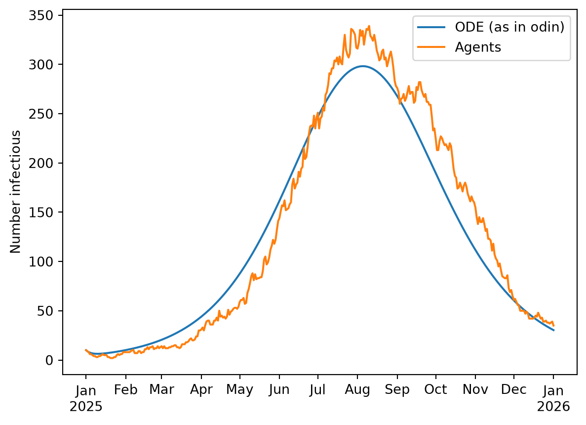
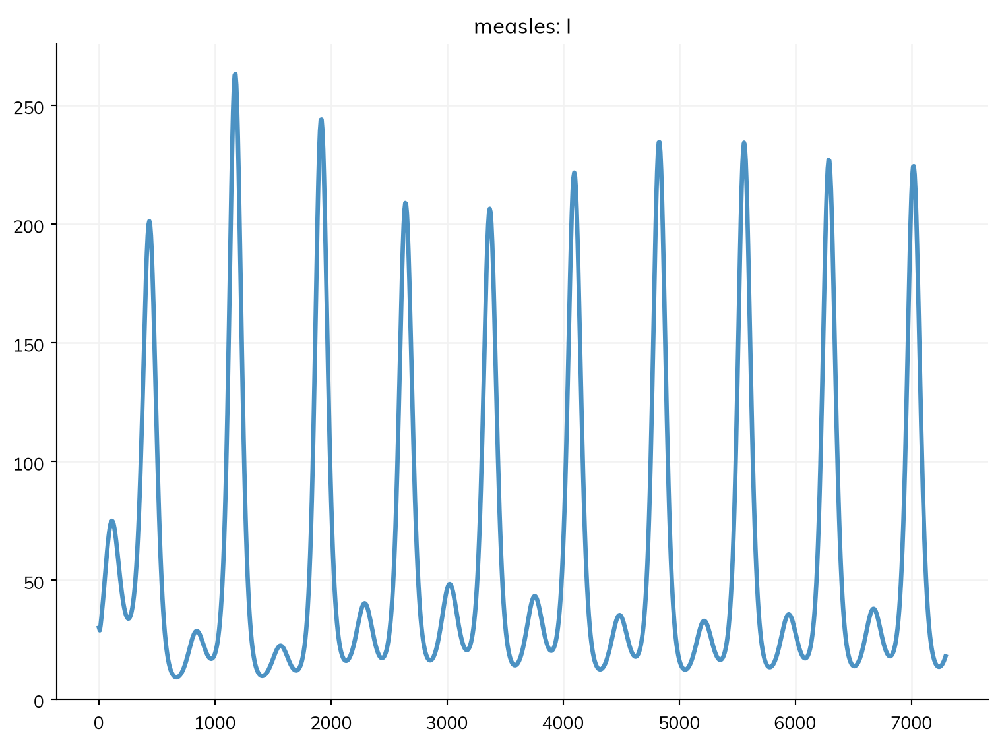

A model written for another framework can be read into Starsim, and a Starsim model can be written out in formats other tools read. Importing is useful for checking a model against its original, for running it in ways the original can’t (as agents, say, or fitted with gradients), or for building on it in Starsim: adding age groups, interventions, or a fit to data. This page covers how importing works, how to check an import and finish one that is incomplete, the formats, and the exports. The pages for each framework (Starsim v3, odin, EpiModel, and the others in this section) show a model from that framework written both ways, and how closely the results agree; Modeling landscape compares the frameworks.
Importing a model
ss.import_from() reads a model file into a sim. Here is a measles model written in odin, a language for compartmental models in R: the measles model of the tutorials, with a latent period of 10 days (a rate sigma of 0.1 per day) and an infectious period of 8 days (gamma = 0.125 per day), in a town of 100,000, 90% of whom are immune. The file is written to a temporary folder first:
import osimport tempfileimport numpy as npimport sciris as scimport starsim as ssodin_code ='''deriv(S) <- -beta * S * I / Nderiv(E) <- beta * S * I / N - sigma * Ederiv(I) <- sigma * E - gamma * Ideriv(R) <- gamma * Iinitial(S) <- N - I_init - R_initinitial(E) <- 0initial(I) <- I_initinitial(R) <- R_initN <- user(100000) # Population sizeI_init <- user(10) # Number infectious at the startR_init <- user(90000) # Number immune at the startbeta <- user(1.9) # Transmission rate, per daysigma <- user(0.1) # 1 / latent period (10 days)gamma <- user(0.125) # 1 / infectious period (8 days)'''folder = tempfile.mkdtemp()filename = os.path.join(folder, 'measles.R')sc.savetext(filename, odin_code)sim = ss.import_from(filename, start='2025-01-01', stop=365)
Starsim kernels: Rust, OUT OF DATE (built before its source last changed, so results may be wrong): run "./build" in starsim/solvers/rust/
Imported "measles" from odin: 4 states, 3 transitions, 4 parameters
S -> E beta * S * I / N : S taken out of the flow; N taken as the total [guessed: N = 100000, the number of people at the start]; exposure to I (divided by the total: frequency-dependent) => beta * I
E -> I sigma * E : E taken out of the flow; spontaneous => sigma
I -> R gamma * I : I taken out of the flow; spontaneous => gamma
Each deriv() is the rate of change of a compartment, written as the total flows in and out: β S I / N people a day are infected, σ E become infectious, and γ I recover. This is the form of most textbooks and frameworks. The format is told from the file (or given with format='odin'). odin has no time unit, so its numbers are taken to be per day (unit= says otherwise), and odin is told when to stop when it is run, so the sim needs stop=, here 365 days; start= gives it dates, which a forecast hub needs (below). Other arguments change the model as it is read: pars=dict(beta=1.5) gives a parameter another value, and dt= a step.
The importer prints how it read each rate, which is the first thing to check. A Starsim transition is a rate per person (each susceptible person is infected at a rate of β times the share infectious), so each importer turns each total flow into a rate for each person who leaves the state, by dividing by that state, and then classifies what is left:
A flow written as
Is read as
gamma * I
A rate gamma per person in I, whatever anyone else is doing
beta * S * I / N
Frequency-dependent transmission: beta * I, exposure to the share infectious
beta * S * I
Density-dependent transmission: beta * I.n, exposure to the number infectious
Anything else
The expression itself, as a rate of counts, which is exact under every solver
Checking an import
The imported model is an ordinary Starsim sim, and runs like any other:
sim.run()sim.plot()
Sim: measles, 100,000 people, as an ODE, 2025-01-01 to 2026-01-01
measles: R0 = 15.2 (R = 1.52 at the start, with 10% susceptible), with 10 infectious at the start
Done in 0.0033 s; measles: 5,856 infections; at most 298 infectious, on 2025-08-05

sim.describe() shows the model as Starsim built it, with each guess marked, as for a model written by hand:
sim.describe()
Sim 1 module, 100,000 people, 2025-01-01 to 2026-01-01
solver
ode
requested
auto would choose: ode (every part of the model has a compartmental form)
unit
day
Disease 'measles' 4 states, 3 transitions
states
S, E, I, R
I infectious
init: S = 9990 people, I = 10 people, R = 90000 people; the rest in E
guessed: E, the only state with no initial value, since S has one
S_to_E
S -> E transmission, from I
guessed: name built from its endpoints
beta = 1.9 per day
rate = 1.9 × I.n / N
homogeneous mixing
imported as exposure to I (divided by the total: frequency-dependent)
guessed
E_to_I
E -> I spontaneous
guessed: name built from its endpoints
time in E ~ exponential(rate = 0.1 per day)
I_to_R
I -> R spontaneous
guessed: name built from its endpoints
time in I ~ exponential(rate = 0.125 per day)
Mixing and interventions
mixing
homogeneous, 1 contact per day
guessed: no network given
Results and running
results
S, E, I, R, and one flow per transition; also prevalence
schedule
every day: measles
Here the importer guessed the names of the transitions (from their states, such as S_to_E, since odin doesn’t name flows), and the total population N (from the people at the start). The solver is the one odin uses for this model, an ODE, so that the results can be checked against odin’s.
Two models are the same if they give the same results. Here is the import against the same model written in Starsim, as in the tutorials (see T3 – Building a disease), where the rates are written as the durations they stand for:
S, E, I, R = ss.states('S E I R')infection = S >> E @1.9*Iprogression = E >> I @ ss.days(10)recovery = I >> R @ ss.days(8)measles = ss.Disease(infection, progression, recovery, init_n=dict(I=10, R=90_000), name='measles')mine = ss.Sim(measles, total_pop=100_000, start='2025-01-01', stop=ss.days(365))mine.run()theirs = sim.results[sim.diseases[0].name]print('Largest difference in I:', abs(theirs.I.values - mine.results.measles.I.values).max())
Sim: measles, 100,000 people, as an ODE, 2025-01-01 to 2026-01-01
measles: R0 = 15.2 (R = 1.52 at the start, with 10% susceptible), with 10 infectious at the start
Done in 0.0033 s; measles: 5,856 infections; at most 298 infectious, on 2025-08-05
Largest difference in I: 0.0
The two differ only in how they are written: the import names its transitions by the states they join, and has a rate of 0.1 a day where the other has an average of 10 days, which is the same exponential distribution. Both run as an ODE, and the numbers agree, so these are the same model. Where two models differ, the describe() of each, side by side, shows how. For an import from a framework that is installed alongside Starsim, the best check is against the original framework’s own results; each conversion page does this for one or two models.
Since the import is an ordinary model, it can then be run in any of the ways Starsim can run a model. sim.new() makes a new sim from the same inputs, with whatever is given changed. Here it is run as agents, which odin can’t do (the solver is given as well as the number of agents, since the import asked for an ODE, to match odin):
agents = sim.new(solver='abm', n_agents=100_000) # One agent per personagents.run()import matplotlib.pyplot as pltfig = plt.figure()plt.plot(sim.t.datevec, theirs.I, label='ODE (as in odin)')plt.plot(agents.t.datevec, agents.results[agents.diseases[0].name].I, label='Agents')plt.ylabel('Number infectious')plt.legend()plt.show()
Sim: measles, as 100,000 agents, 2025-01-01 to 2026-01-01
Note: consider a shorter step (e.g. dt=ss.days(0.25)): each step is 1 day, and S_to_E transmits at up to 1.9 per day (with everyone infectious), 85% in a step (and I is fast too). Taking whole steps, agents may differ from the ODE by an amount of that order; sim.check_dt() shows how much it matters
Done in 0.63 s; measles: 6,030 infections; at most 339 infectious, on 2025-08-10

The agents follow the ODE, as they should in a town of this size, with some noise from chance: with only 10 people infectious at the start, and only 10% of the town susceptible, chance moves the timing of the peak a little from run to run, and whole steps of a day make the peak a little higher (as the note printed by the run says). See Solvers and backends for the solvers.
Keeping an imported model
An import gives Starsim code: the importer writes the model as Python, and the sim is that code run. The code is kept as sim.imported.code, to be kept, read, and changed like a model written by hand. It says where the model came from and how each rate was read, and ends with anything that wasn’t translated:
print(sim.imported.code)
# Imported from odin (measles.R) by ss.import_from()
#
# How each rate was read:
# S -> E beta * S * I / N : S taken out of the flow; N taken as the total [guessed: N = 100000, the number of people at the start]; exposure to I (divided by the total: frequency-dependent) => beta * I
# E -> I sigma * E : E taken out of the flow; spontaneous => sigma
# I -> R gamma * I : I taken out of the flow; spontaneous => gamma
import starsim as ss
# Parameters
N = ss.par(100000.0)
beta = ss.par(1.9)
gamma = ss.par(0.125)
sigma = ss.par(0.1)
# States
S, E, I, R = ss.states('S E I R')
# Transitions and outcomes
S_to_E = S >> E @ (beta * I)
E_to_I = E >> I @ sigma
I_to_R = I >> R @ gamma
measles = ss.Disease(
S, E, I, R, S_to_E, E_to_I, I_to_R,
init_n = dict(S=9990, I=10, R=90000),
first = 'S',
name = 'measles',
)
sim = ss.Sim(diseases=[measles], solver='ode', unit='day', stop=ss.days(365), start='2025-01-01', total_pop=100000.0)
if __name__ == '__main__':
sim.run()
sim.plot()
The code is yours, a starting point to edit: a transition can be given a better name (infection rather than S_to_E), a rate can be written as the duration it stands for, and anything Starsim has that the original doesn’t (age groups, interventions, a fit to data) can be added. sc.savetext('measles.py', sim.imported.code) writes it to a file, and ss.converters.convert(filename) imports a model and saves its code in one step (beside the original, with the extension .py, unless filename= is given). Reading some formats takes a while (a large workbook, or a script that has to be run in R first), and the saved code then runs in a fraction of the time. From then on, the file is the model: to compare it with another version, compare their results or their describe(), or the two files in a text editor.
Finishing an incomplete import
Each framework has features that have no direct counterpart in Starsim, such as code written in the original language, or a formula the importer can’t read. An importer translates what it can, and lists the rest by name rather than guessing: the sim runs without the parts it couldn’t translate, and lists them in a warning (ss.errors.ImportIncomplete) and in sim.imported.incomplete. The import above was complete:
Here is the measles model over 20 years instead, with births, deaths, and seasonal transmission:
seasonal_code ='''deriv(S) <- mu * N - beta * S * I / N - mu * Sderiv(E) <- beta * S * I / N - sigma * E - mu * Ederiv(I) <- sigma * E - gamma * I - mu * Ideriv(R) <- gamma * I - mu * RN <- S + E + I + Rbeta <- beta0 * (1 + amp * cos(2 * 3.141593 * t / 365)) # Highest at the start of each yearinitial(S) <- 7000initial(E) <- 30initial(I) <- 30initial(R) <- 92940beta0 <- user(1.9) # Mean transmission rate, per dayamp <- user(0.2) # Size of the seasonal cycle, relative to the meansigma <- user(0.1) # 1 / latent period (10 days)gamma <- user(0.125) # 1 / infectious period (8 days)mu <- user(0.00008) # Birth and death rate, per day (about 3% a year)'''seasonal_file = os.path.join(folder, 'measles_seasonal.R')sc.savetext(seasonal_file, seasonal_code)seasonal = ss.import_from(seasonal_file, stop=20*365, dt=7) # A step of a week is plenty over 20 yearsseasonal.imported.incomplete
Imported "measles_seasonal" from odin: 4 states, 8 transitions, 5 parameters
-> S mu * N : an inflow, from counts => mu * (S.n + E.n + I.n + R.n)
S -> mu * S : S taken out of the flow; an outflow => mu
E -> I sigma * E : E taken out of the flow; spontaneous => sigma
E -> mu * E : E taken out of the flow; an outflow => mu
I -> R gamma * I : I taken out of the flow; spontaneous => gamma
I -> mu * I : I taken out of the flow; an outflow => mu
R -> mu * R : R taken out of the flow; an outflow => mu
/home/cliffk/idm/ssv4/starsim/converters/core.py:862: ImportIncomplete:
2 part(s) of the model were not translated:
time: an equation uses the time (t, time, or step); a value that changes in time could be an ss.timeseries
S -> E: the rate "beta * S * I / N" could not be translated ("t" is not a state or parameter of the model)
The sim runs without them. To finish the import, ask an AI assistant with the import-model skill loaded (printed by `starsim ai show import-model`, or starsim_ai/import-model in the Starsim repo; see "Finishing an incomplete import"): "Finish importing measles_seasonal.R (odin) into Starsim: save its code, sim.imported.code, to a file, translate each part listed in sim.imported.incomplete (the code's "Not translated" comments), and check the result against the original with the validate-import skill."
[('time',
'an equation uses the time (t, time, or step); a value that changes in time could be an ss.timeseries'),
('S -> E',
'the rate "beta * S * I / N" could not be translated ("t" is not a state or parameter of the model)')]
β now depends on the time, t, in a formula the importer doesn’t translate. So the transmission, which uses β, isn’t translated either, and both are listed. The births, deaths, latent period, and recovery are translated. Without the transmission, this sim would run, but with no epidemic, so it has to be finished first. The code of the import lists what wasn’t translated at the end, as comments, and the missing parts can be added to it by hand. A seasonal cycle like this one is ss.seasonal() (see Parameters): a mean, an amplitude, and the time of year of the peak, here the start of the year (peak=0). Births and deaths into and out of every state are shorter written as ss.birth() and ss.death() in demographics= (see Demographics), which is the same model:
beta = ss.seasonal(mean=ss.perday(1.9), amplitude=0.2, peak=0) # Added: β, highest at the start of the yearS, E, I, R = ss.states('S E I R')infection = S >> E @ beta*I # Added: the transmissionprogression = E >> I @ ss.perday(0.1)recovery = I >> R @ ss.perday(0.125)measles = ss.Disease(infection, progression, recovery, init_n=dict(S=7000, E=30, I=30, R=92940), name='measles')demographics = [ss.birth(rate=ss.perday(8e-05)), ss.death(rate=ss.perday(8e-05))]finished = ss.Sim(measles, demographics=demographics, total_pop=100_000, stop=ss.days(20*365), dt=ss.days(7))finished.run()finished.plot('measles.I')
Sim: measles, 100,000 people, as an ODE, days 0 to 7294 (the last whole step before 7300)
measles: R0 = 18.2 (R = 1.29 at the start, with 7% susceptible), with 30 infectious at the start
Done in 0.0052 s; measles: 55,071 infections; at most 263 infectious, on day 1176

This gives the two-year cycle of measles epidemics, as births replenish the susceptible people. Checking it against the original model, run in odin, would be the last step.
For a longer model, with more that isn’t translated, sim.imported.prompt is a prompt for an AI assistant with Starsim’s import-model skill (installed with starsim ai install), which can finish the job in the same way: write the code, translate what is listed, and check the result against the original.
The formats
ss.import_from() reads these formats, and tells which one a file is from by its contents (or give format=); ss.converters.importers lists them:
For epipack, epydemix, epymorph, MEmilio, and summer2, Starsim’s importer for that framework (e.g. starsim/converters/memilio.py) also runs as a script in the framework’s own environment, needing neither Starsim nor Sciris there, and writes what it built as JSON for Starsim to read; for EpiModel, starsim/converters/dump_epimodel.R does the same in R. The others are read directly. Each importer is tested against its framework’s own examples. A Starsim 3 script is not imported, but rewritten: see Starsim v3.
How an import is built
Every importer reads its format into the same intermediate object, ss.converters.Source: its states, parameters, flows as rate expressions, stratifications, outcomes, and what it couldn’t translate. One function, ss.converters.write(), writes a Source as Starsim code (a declared ss.Disease, with its parameters, states, and transitions as variables, ending with sim = ss.Sim(...)), by the same rules for every format, and ss.converters.build() runs that code to make the sim. So there is one path, from another framework’s model to code to a sim; each framework needs only a reader. A value that can’t be written as a simple value, such as a network, is given by the importer as ss.converters.Code('...'), the Python that makes it.
A Source can also be filled in by hand, to bring in a model from a framework that has no importer (here, an SIR from a spreadsheet or a paper):
src = ss.converters.Source('sir', format='by hand')for name, n indict(S=990, I=10, R=0).items(): src.add_state(name, init=n)src.add_par('beta', 0.3)src.add_par('gamma', 0.1)src.add_flow('S', 'I', rate='beta * S * I / (S + I + R)', per='total', name='infection')src.add_flow('I', 'R', rate='gamma * I', per='total', name='recovery')sir = ss.converters.build(src, stop=100)print(sir.imported.code)
Imported "sir" from by hand: 3 states, 2 transitions, 2 parameters
S -> I beta * S * I / (S + I + R) : S taken out of the flow; exposure to I (divided by the total: frequency-dependent) => beta * I
I -> R gamma * I : I taken out of the flow; spontaneous => gamma
# Imported from by hand (an object) by ss.import_from()
#
# How each rate was read:
# S -> I beta * S * I / (S + I + R) : S taken out of the flow; exposure to I (divided by the total: frequency-dependent) => beta * I
# I -> R gamma * I : I taken out of the flow; spontaneous => gamma
import starsim as ss
# Parameters
beta = ss.par(0.3)
gamma = ss.par(0.1)
# States
S, I, R = ss.states('S I R')
# Transitions and outcomes
infection = S >> I @ (beta * I)
recovery = I >> R @ gamma
sir = ss.Disease(
S, I, R, infection, recovery,
init_n = dict(S=990, I=10),
first = 'S',
name = 'sir',
)
sim = ss.Sim(diseases=[sir], stop=100, total_pop=1000)
if __name__ == '__main__':
sim.run()
sim.plot()
ss.converters.write(src) gives the code without running it. How the importers and exporters are built is described in Architecture.
Exporting a model
A Starsim model is written as Python, and that code is the model: it is what is kept, shared, and compared. There are other ways to write a model, or its results, out:
What
How
Holds
Read back?
The code
the script itself; for an import, sim.imported.code
the model, as Python
yes, by running it
Results as JSON
sim.to_json()
parameters, summary, and results, for use elsewhere
no
A saved sim
ss.save('run.sim', sim)
the sim itself (a pickle), including partway through a run
ss.export_to() writes a model in SBML (for tools such as COPASI) or odin. Each is written from the model’s compartmental form:
print(ss.export_to(sim, 'odin'))
## measles, exported from Starsim 4.0.0; time is in days
deriv(S) <- -S_to_E
deriv(E) <- S_to_E - E_to_I
deriv(I) <- E_to_I - I_to_R
deriv(R) <- I_to_R
initial(S) <- 9990
initial(E) <- 0
initial(I) <- 10
initial(R) <- 90000
S_to_E <- beta * S * I / N
E_to_I <- sigma * E
I_to_R <- gamma * I
N <- S + E + I + R
beta <- user(1.9)
sigma <- user(0.1)
gamma <- user(0.125)
/home/cliffk/idm/ssv4/starsim/converters/export.py:487: LossyExport:
exported to odin: 4 states, 3 transitions, as 4 compartments and 3 flows (time in days)
not exported: result "prevalence"
filename= writes it to a file too. A format that can’t carry part of the model (such as a network, a module written as code, or a function) leaves it out, and the export lists what it left out or changed in a warning (ss.errors.LossyExport), one line for each. An exported model can be read back in:
sbml_file = os.path.join(folder, 'measles.xml')ss.export_to(sim, 'sbml', filename=sbml_file)again = ss.import_from(sbml_file, start='2025-01-01', stop=365, verbose=False)again.run()print('Infections, imported from odin:', round(sim.results.measles.S_to_E.values.sum()))print('Infections, after a round trip through SBML:', round(again.results.measles.S_to_E.values.sum()))
Infections, imported from odin: 5856
Infections, after a round trip through SBML: 5856
/home/cliffk/idm/ssv4/starsim/converters/export.py:487: LossyExport:
exported to SBML: 4 states, 3 transitions, as 4 species and 3 reactions (rates per day)
not exported: result "prevalence"
A sim made in Starsim is not written back out as Starsim code: its code is the script that made it. Only an import is written as code.
Forecast hubs
ss.converters.to_hub() writes the runs of a MultiSim as a submission to a forecast hub (in the hubverse format used by the US forecast and scenario modeling hubs): each target, by scenario, location, and period, as quantiles over the runs or as the runs themselves. Here, weekly infections from 20 stochastic runs of the imported model:
A target named “cum …” is the total since the start, and “peak size …” the largest value of a period; by= gives a location for each level of a stratification (such as each place), and output_type='sample' gives the runs instead of quantiles. See Scenarios for running scenarios to submit.